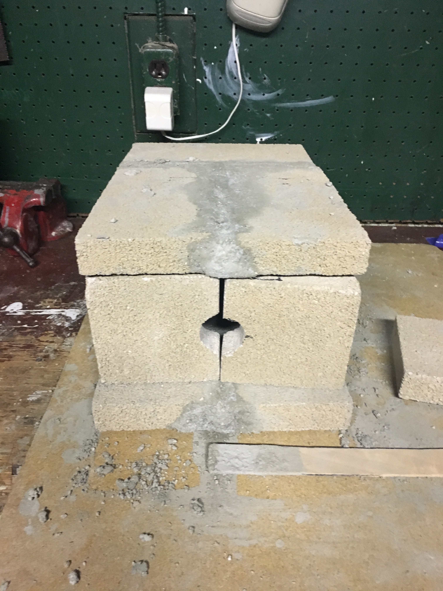

To start forging the knife, I had to create the forge itself. This forge is made out of firebrick and is coated on the inside with refractory cement. It was fired with a 500,00 BTU propane torch (Who doesn't love Amazon), which I also use to heat my blade.


Above is a 3d model as well as an engineering drawing of the forge. I used OnShape to model the forge and for the physical bricks I used simply an angle grinder.

For the Forge I made two types of front walls. I made one where I would be able to watch the material, if the temperature (color) needed to be very accurate. Then a solid front for when I just need the material to heat fast.